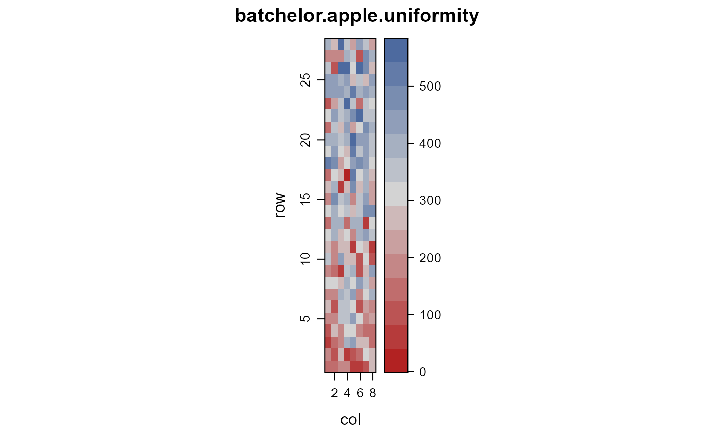
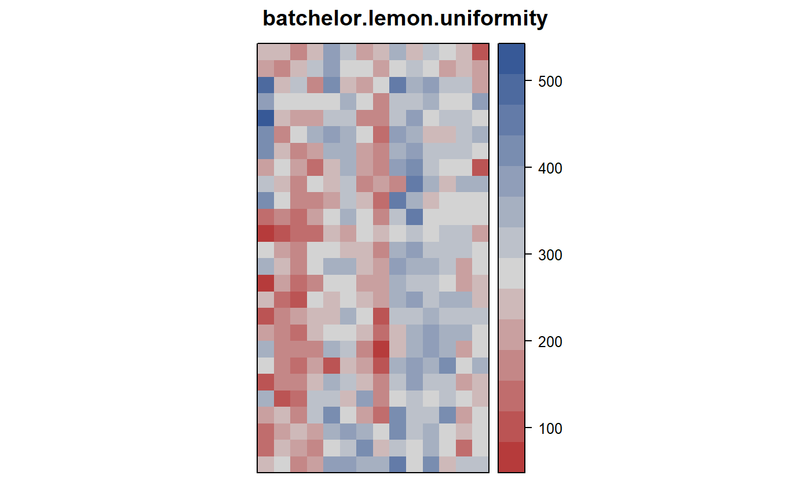
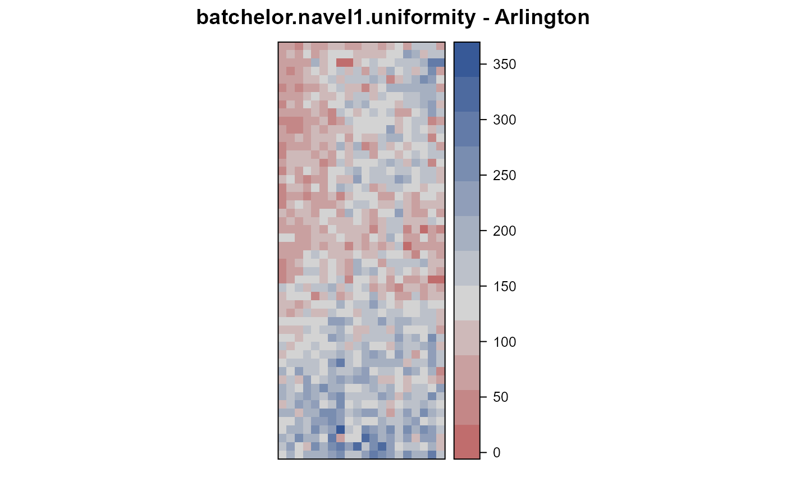
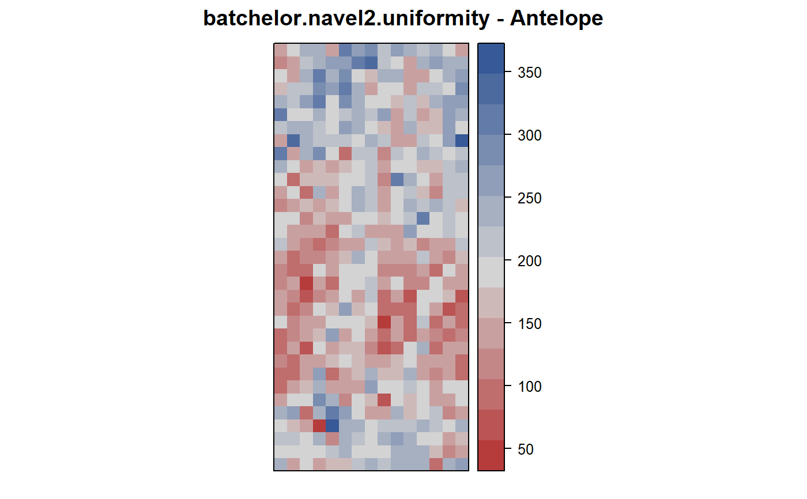
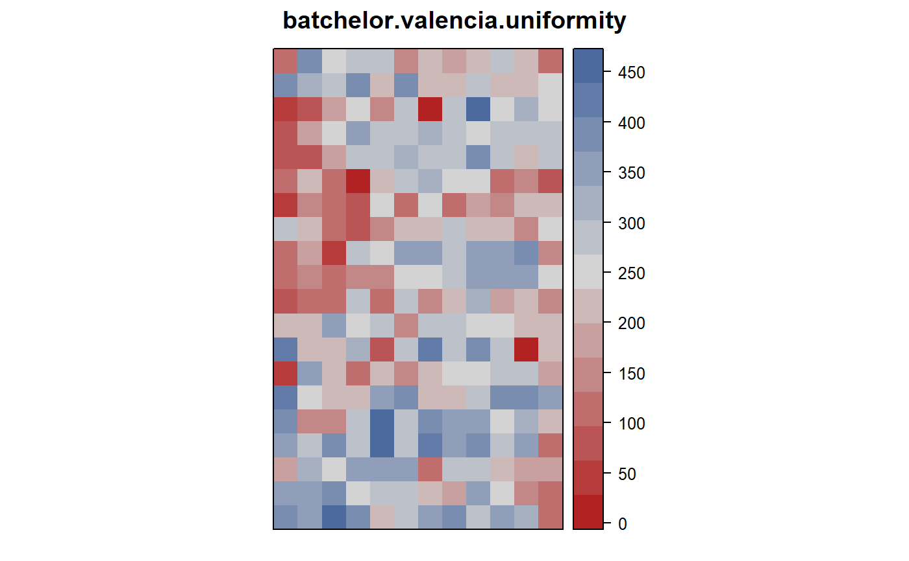
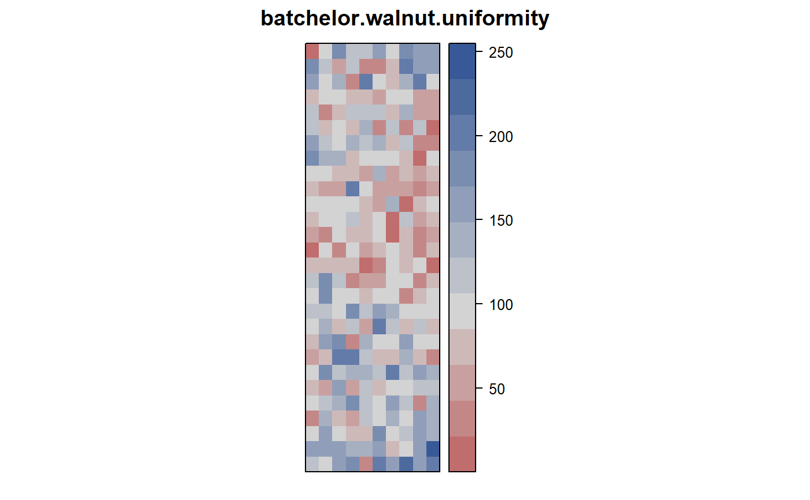

batchelor.uniformity.RdUniformity trials of apples, lemons, oranges, and walnuts, in California & Utah, 1915-1918.
Each dataset has the following format
rowrow
colcolumn
yieldyield per tree (pounds)
A few of the trees affected by disease were eliminated and the yield was replaced by the average of the eight surrounding trees.
The following details are from Batchelor (1918).
Jonathan Apples
"The apple records were obtained from a 10-year old Jonathan apple orchard located at Providence, Utah. The surface soil of this orchard is very uniform to all appearances except on the extreme eastern edge, where the percentage of gravel increases slightly. The trees are planted 16 feet apart, east and west, and 30 feet apart north and south."
Note: The orientation of the field is not given in the paper, but all other fields in the paper have north at the top, so that is assumed to be true for this field as well. Yields may be from 1916.
Field width: 8 trees * 16 feet = 128 feet
Field length: 28 rows * 30 feet = 840 feet
Eureka Lemon
The lemon (Citrus limonia) tree yields were obtained from a grove of 364 23-year-old trees, located at Upland, California. The records extend from October 1, 1915, to October 1, 1916. The grove consists of 14 rows of 23-year-old trees, extending north and south, with 26 trees in a row, planted 24 by 24 feet apart. This grove presents the most uniform appearance of any under consideration [in this paper]. The land is practically level, and the soil is apparently uniform in texture. The records show a grouping of several low-yielding trees; yet a field observation gives one the impression that the grove as a whole is remarkably uniform.
Field width: 14 trees * 24 feet = 336 feet
Field length: 26 trees * 24 feet = 624 feet
Navel 1 at Arlington
These records were of the 1915-16 yields of one thousand 24-year-old navel-orange trees near Arlington station, Riverside, California. The grove consists of 20 rows of trees from north to south, with 50 trees in a row, planted 22 by 22 feet. A study of the records shows certain distinct high- and low-yielding areas. The northeast corner and the south end contain notably high-yielding trees. The north two-thirds of the west side contains a large number of low-yielding trees. These areas are apparently correlated with soil variation. Variations from tree to tree also occur, the cause of which is not evident. These variations, which are present in every orchard, bring uncertainty into the results offield experiments.
Field width: 20 trees * 22 feet = 440 feet
Field length: 50 trees * 22 feet = 1100 feet
Navel 2 at Antelope
The navel-orange grove later referred to as the Antelope Heights navels is a plantation of 480 ten-yearold trees planted 22 by 22 feet, located at Naranjo, California. The yields are from 1916. The general appearance of the trees gives a visual impression of uniformity greater than a comparison of the individual tree production substantiates.
Field width: 15 trees * 22 feet = 330 feet
Field length: 33 trees * 22 feet = 726 feet
Valencia Orange
The Valencia orange grove is composed of 240 15-year-old trees, planted 21 feet 6 inches by 22 feet 6 inches, located at Villa Park, California. The yields were obtained in 1916.
Field width: 12 rows * 22 feet = 264 feet
Field length: 20 rows * 22 feet = 440 feet
Walnut
The walnut (Juglans regia) yields were obtained during the seasons of 1915 and 1916 from a 24-year-old Santa Barbara softshell seedling grove, located at Whittier, California. [Note, The yields here appear to be the 1915 yields.] The planting is laid out 10 trees wide and 32 trees long, entirely surrounded by additional walnut plantings, except on a part of one side which is adjacent to an orange grove. The trees are planted on the square system, 50 feet apart.
Field width: 10 trees * 50 feet = 500 feet
Field length: 32 trees * 50 feet = 1600 feet
Batchelor, LD and Reed, HS. 1918. Relation of the variability of yields of fruit trees to the accuracy of field trials. J. Agric. Res, 12, 245--283. http://books.google.com/books?id=Lil6AAAAMAAJ&lr&pg=PA245
McCullagh, P. and Clifford, D., (2006). Evidence for conformal invariance of crop yields, Proceedings of the Royal Society A: Mathematical, Physical and Engineering Science, 462, 2119--2143. http://doi.org/10.1098/rspa.2006.1667
library(agridat) libs(desplot) # Apple data(batchelor.apple.uniformity) desplot(yield~col*row, data=batchelor.apple.uniformity, aspect=840/128, tick=TRUE, # true aspect main="batchelor.apple.uniformity")# Lemon data(batchelor.lemon.uniformity) desplot(yield~col*row, data=batchelor.lemon.uniformity, aspect=624/336, # true aspect main="batchelor.lemon.uniformity")# Navel1 (Arlington) data(batchelor.navel1.uniformity) desplot(yield~col*row, batchelor.navel1.uniformity, aspect=1100/440, # true aspect main="batchelor.navel1.uniformity - Arlington")# Navel2 (Antelope) data(batchelor.navel2.uniformity) desplot(yield~col*row, data=batchelor.navel2.uniformity, aspect=726/330, # true aspect main="batchelor.navel2.uniformity - Antelope")# Valencia data(batchelor.valencia.uniformity) desplot(yield~col*row, data=batchelor.valencia.uniformity, aspect=440/264, # true aspect main="batchelor.valencia.uniformity")# Walnut data(batchelor.walnut.uniformity) desplot(yield~col*row, data=batchelor.walnut.uniformity, aspect=1600/500, # true aspect main="batchelor.walnut.uniformity")